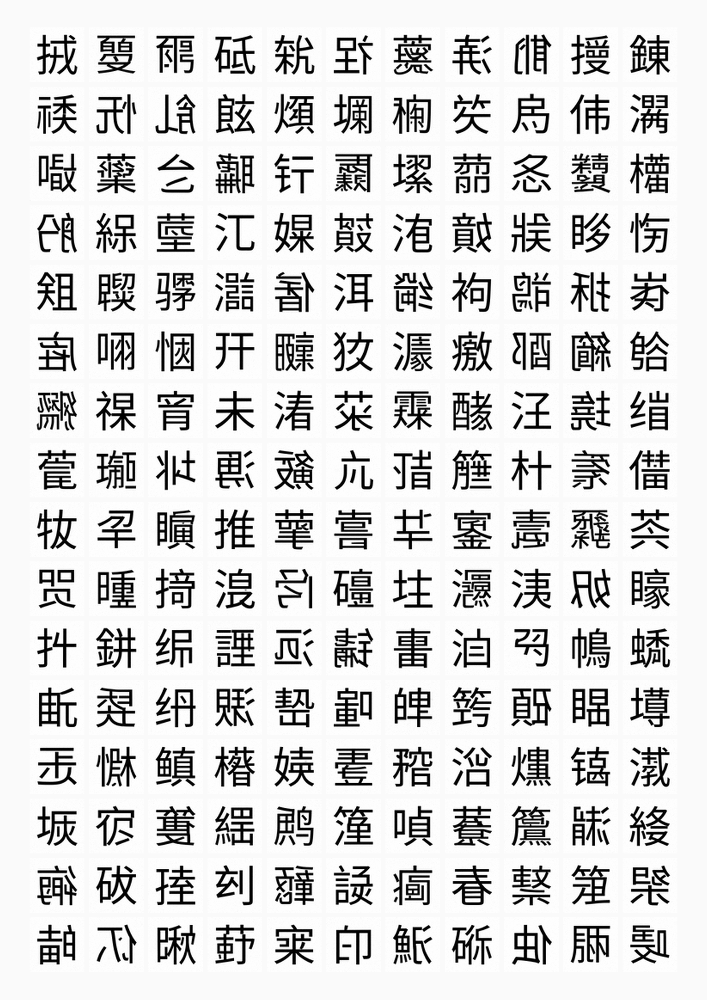

- 漢字モーフィング -
もともと個人の絵や図形として描かれていたものが、やがて文字として使われるようになった漢字。その漢字を、意味や読みではなく純粋な「画像」として AI に学習させた。
そこから繰り出される画像に対して、自分はどのような印象を抱くのか。手を動かしながら考えている。
現在は、画像と主体の関係性と AI 生成のメディア的な特性を考えつつ、AI 生成の主体はどこに帰属するのか、AI で漢字を生成するときその裏側では一体何が起こっているのか、を鑑賞者に感覚的に感じてもらう表現や展示を模索している。

このグリッドは、学習済みの SymbolUNet にガウスノイズだけを与えて生成したものだ。入力テキストも漢字の指定もない。純粋なランダムノイズが、モデルの速度場に従って積分されると、漢字らしい形が浮かび上がってくる。
モデルは Apple Silicon の GPU（MPS バックエンド）上でローカル実行している。クラウド不要、すべてが手元の Mac で完結する。下の図はその構成だ。